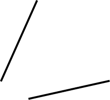
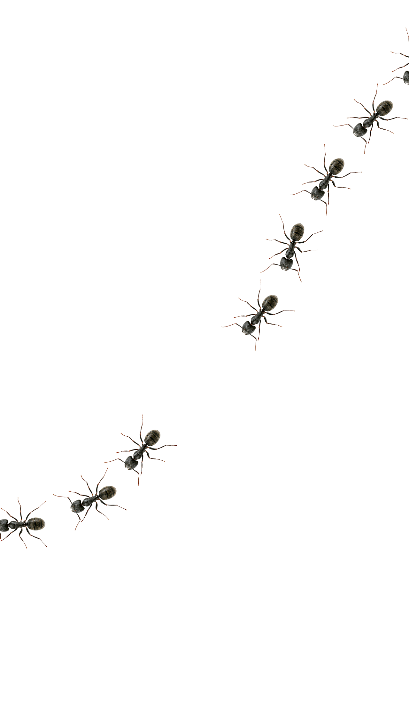
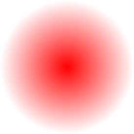
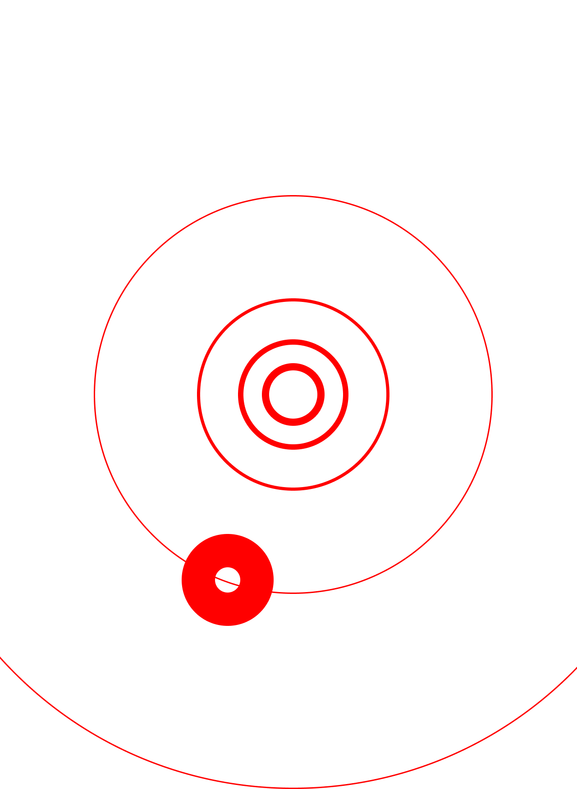
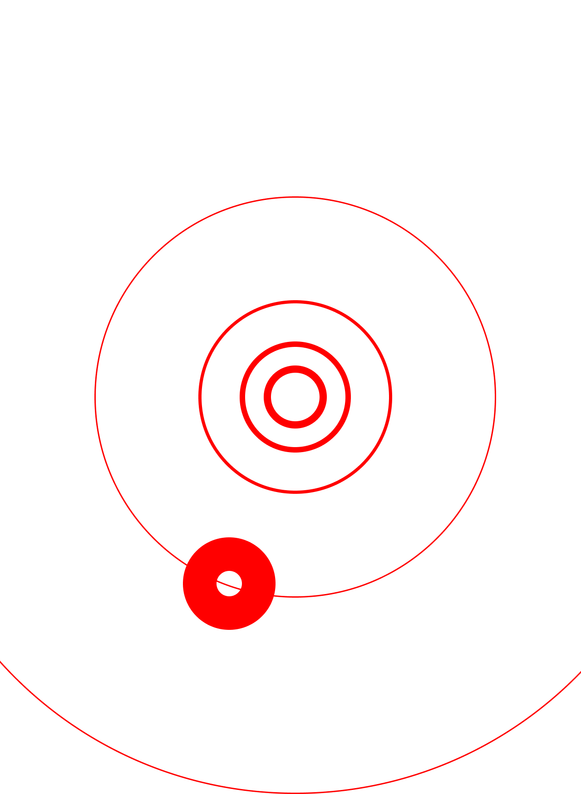
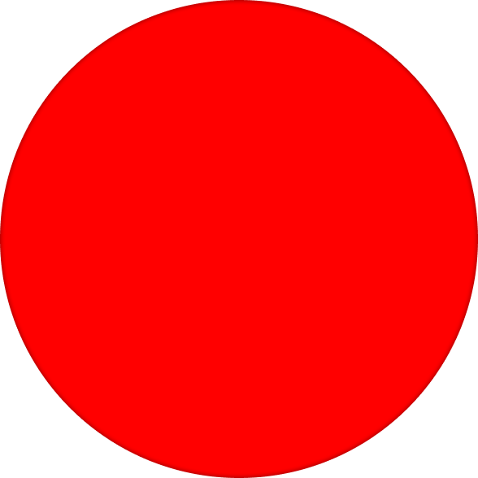
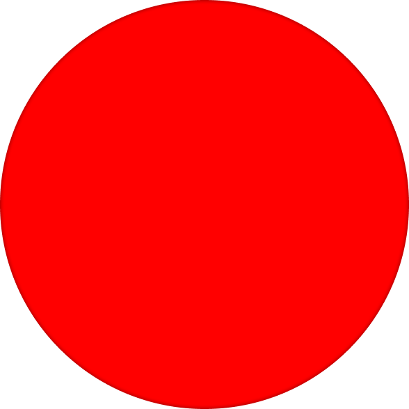

그런데 개미들은 인간처럼 생각을 할 수 없으니,
그들을 한 데 똘똘 뭉쳐 줄
페로몬의 역할이 상당히 중요해 보입니다···

따라가!
   

 

개미는 자신이 움직이는 경로
위에 페로몬을 남깁니다. 이 페로몬의
농도가 높을수록 다른 개미가 그 길을
선택할 확률이 올라가죠. 동시에
사용되지 않은 페로몬은 자연스럽게
증발하므로, 비효율적인 길은
소멸하게 될 거에요.
개미들에게 페로몬은 없어선 안 됩니다.
집단지성의 접착제 역할을 하는 셈이니까요.
하지만 만약 페로몬이 생명의 위협을 할 수도 있다면요?